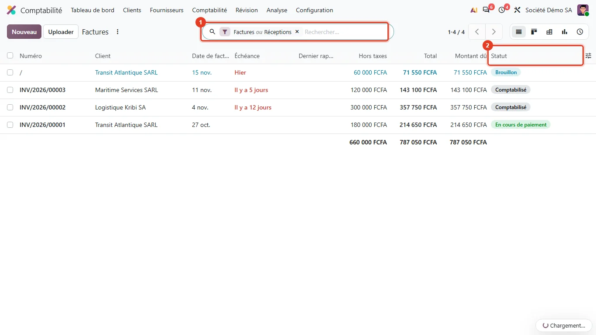

Contrôler une facture avant de la valider
Objectif. Éviter les factures sans montant, les doublons et les factures oubliées en brouillon.
Menu Odoo 15Comptabilité > Clients > Factures
Étapes
- Ouvrez la liste des factures et utilisez la recherche (1) : filtre Brouillon.
- Regardez la colonne Statut (2) : aucune facture ne doit rester en brouillon en fin de journée.
- Recherchez le client et le montant pour repérer un doublon avant de confirmer.
- Ouvrez chaque brouillon : complétez-le et confirmez-le, ou supprimez-le s'il est en trop.

À vérifier
- Plus aucune facture en brouillon à la fin de la journée.
- Aucune facture confirmée à 0.
- Pas deux factures pour la même opération.
À éviter
- Ne supprimez jamais une facture confirmée : établissez un avoir (formation 3).
Exercice
Filtrez les factures en brouillon du jour et traitez-les une par une.